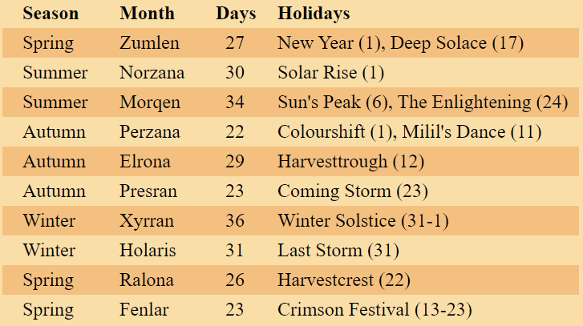

<<< Return to Contents
<<< Return to Regions
Current Date
Leoreen, the 12th day of Fenlar, 3E-286
The Start of the Third Era
The Kingdom of Trimor formed nearly three centuries ago, to unite against the fiends that tore through the a rip in the plains. These fiends devastated the Material Plain, destroying barracks, burning fields, and slaying all those who dared cross them. These independent republics that are now united under Trimor, came together for the first time to destroy this evil. The Crimson Malitia were formed under this, then temporary concord, and successfully drove back the fiend army attack over this part of Greyspire over the course of six years. Battle sites are scattered across the plains, and rift openings hidden, and seemingly lost in history. It is not known the underlying reason to their attack, but it ultimately brought a lot of people together. After the battle was finally won, the republics came together and united, ultimately forming under the monarchy of Norlock Starr. The now region of the Starr Grounds had the most resources and largest population, giving it the greatest claim to running the kingdom. The monarchy supports the kingdom as a whole, but each region has a designated capital that oversees the needs for their specific people.
Calendar of Greyspire
The calendar that is followed across most of the world has 281 days. It is grouped into ten months, and followed through seven day weeks. It has deep elven ancestry, which is visible for the names of the months and days that still represent this calendar these many centuries later. The holidays however, are mainly representative of the days celebrated by all those in Trimor. The days of the week are Dafaren, Raloren, Dormren, Brytren, Yesren, Safareen, and Leoreen.
More about Holidays
The Regions of Trimor
Starr Grounds
The home of the capital Billingwood and the monarchy, the Starr Grounds are regarded as the central hub of the kingdom. Highly populous, the Starr Grounds are home to a mixture of races. Originally dominantly human before Trimor was formed, its indigenous culture is relatively no longer present as large groups of other races are scattered across through the townships. The Culderwoods take up a large area of this region, and have been relatively untouched due to how dense it is.
Astesh
The southern-most region of the western divide, Ashtesh is the gateway east across the peaks of Highgate. A contender for the first settlement of Trimor is Felderwind, where a large amount of lumber and exotic fruits are harvested. The capital Highgate, maintains the flow of people through the divide. A city built into the mountains, dwarvish heritage is rich here.
Oadraar
The region with a view of the Dire Alps to the north-west, it is the last line before the empire of Farwind. The snowy township of Alldene is a common stop for adventurers before setting foot outside of the kingdom. The western-most settlement of Trimor is the costal city of Zadaar. The region capital is located among a hilly range, and home of the Arcane Conglomerate.
Crinegard Plains
The beautiful plains of Crinegard are home to the people of the second-most populous region. Originally from dwarven heritage, their culture is interwoven in most settlements throughout the area. Creswell is the region capital and home to the main port and the trade guild. Wanderers travel to Fleydire for a holiday retreat, with many eateries for exotic foods, and a view of the Malva Coast is appetising for most.
Saifra
Many large costal settlements are found throughout Saifra, with a lot of produce and vegetables being imported from neighbouring regions. However for what this region lacks in farming, it makes up for in mining and engineering. The mines located next to the north-west of its capital Darrington are worked for their coal and ore for production of weapons, armour, and other experimental contraptions.
Endrais
The hotter climate up the northern end of the eastern reaches makes Endrais one of the lesser inhabited regions of Trimor. The fewer established settlement often accounts for less travel to the region. Monfield has a view over the southern reaches of the Spiked Gate, a haven for shipwrecks if traversed without care. Many ships dock here before a journey through the Cobalt Sound. To the north is the abandoned city of Endes, a settlement that suffered the brunt of the fiend attack. Some say dessert creatures wander the ruins, but others have come back with vast amounts of treasures.
Neighbouring Empires
Luria
The people of Luria, a republic to the south-west, decided to keep their people separate to Trimor after the army of fiends were defeated. They helped keep them at bay during this war, and remain a close ally to this day. Some people travel to Luria for the beautiful sights, while some seek a greater meaning, making a trek to Elder Reach to rediscover themselves.
Farwind
Across Alldene Pass to the north-west is the plutocracy of Farwind. They are not considered an ally of Trimor, but have a few trade routes stemming through the pass, and along the seas. They had their own dealings with the army of fiends, and kept to themselves during this stressful period.
Pantheons & Deities
Although there aren't any formally recognised deities in Trimor, there are some more prominent than others. You can find temples to recognised gods and goddesses at most cities and towns, and priests spread the word of their holiness on the streets.
More about the Gods and Goddesses
Organisations
Grindwall Record
The people who work at The Grindwall Record are the primary keepers of information and specialists in specific research. The formal attire follows the deep purple monarch colour, with different embroidery designs representing the status of its members. There are libraries at every region capital, but the main headquarters are located in Billingwood.
Crimson Malitia
Formed near the end of the second era, the Crimson Malitia remain the first line of defence across Trimor against other intruders, and are stationed at multiple towns and cities across the kingdom. They can be recognised from the engraved armour, with different colours representing their rank and division.
Starrgard
Guards patrolling the streets and officers keeping law and order in major and minor settlements are classified as Starrgard, employed directly by the crown, but work on behalf of their regions. Even villages as small as fifty people will have some Starrgard keeping an eye on the peace.
Acrane Conglomerate
The study and research of magic predominantly takes place at the Arcane Conglomerate. From teaching the arcane practice, to researching new methods of manipulation of matter and energy, this school located in Zadaar is some people's dreams to attend.
Trade Guild
The Trade Guild is responsible for the moving traffic of goods across the roads and seas of Trimor. The guild is centred in Creswell, as the city is the main port of the kingdom. It is responsible for the imports and exports to and from other empires in Greyspire.